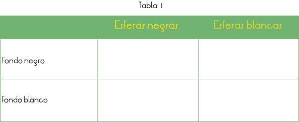

Selección natural: Proceso por el cual los individuos que poseen características que los ayudan a adaptarse a su medio, tienden a sobrevivir (sobrevivencia del más apto) y a transmitir sus características.
Demostrar la función de un depredador en un ambiente determinado y la influencia que tiene este hecho en el proceso de selección natural.
1. Forma equipos de 4 personas.
2. Coloca sobre la mesa el tablero de color negro y usen las esferas unicel de ambos colores.
3. Las esferas son los organismos y nosotros los depredadores de dichas esferas.
4. Ahora toma durante 15 segundos las esferas que puedas.
5. Repite el paso anterior pero ahora con el tablero blanco.
6. Completa la siguiente tabla de resultados.

La formulación clásica de la selección natural, establece que las condiciones de un medio ambiente, favorecen o dificultan es decir seleccionan la supervivencia y por lo tanto la reproducción de los organismos vivos según sean sus peculiaridades. La selección natural fue propuesta por Darwin como medio para explicar la evolución biológica. Esta explicación parte de dos premisas. La primera de ellas afirma que entre los descendientes de un organismo hay una variación aleatoria, no determinista, que es en parte heredable. La segunda premisa sostiene que esta variabilidad puede dar lugar a diferencias de supervivencia y de éxito reproductor, haciendo que algunas características de nueva aparición se puedan extender en la población. La acumulación de estos cambios a lo largo de las generaciones produciría todos los fenómenos evolutivos.